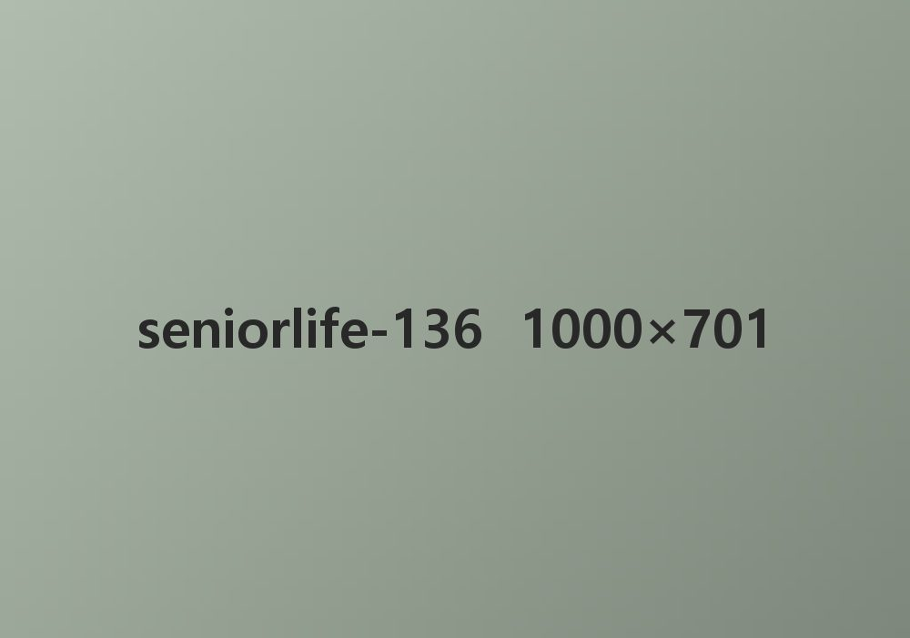
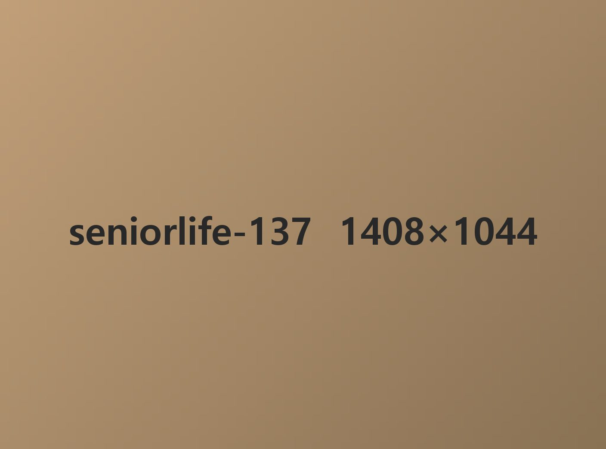
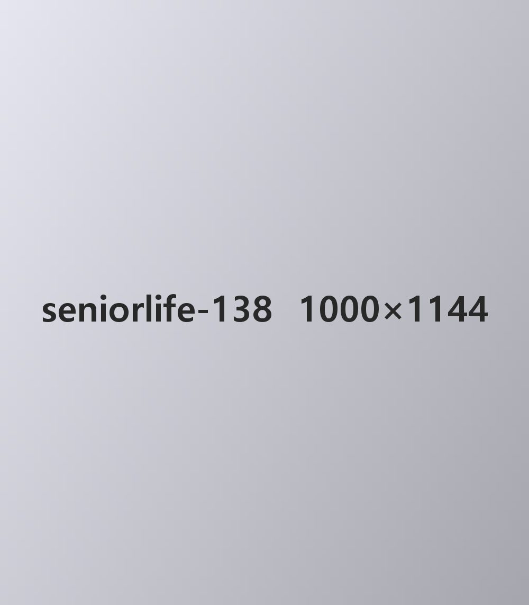
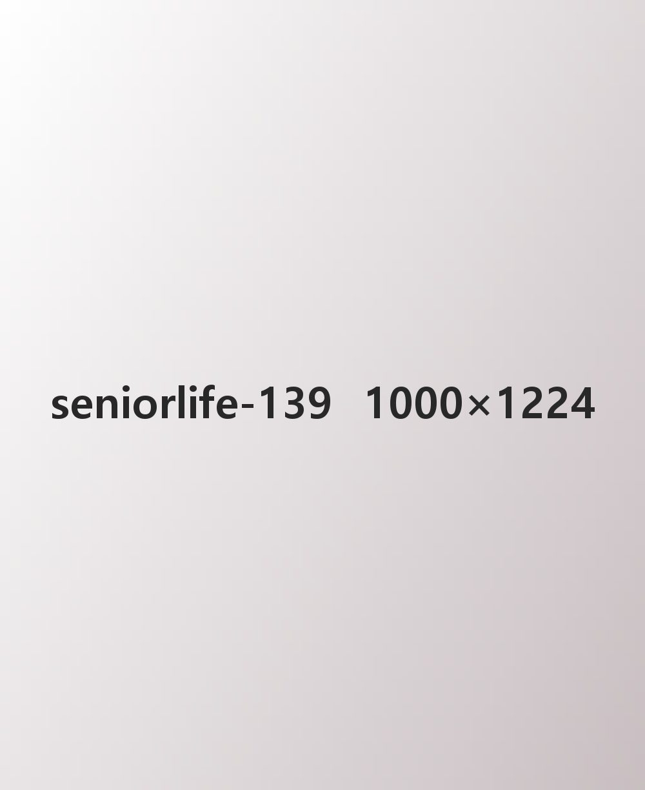

콘텐츠시니어라이프시니어라이프 상세 쪽
콘텐츠시니어라이프시니어라이프 상세 쪽

[건강 비책] 손주 돌보다 상하는 허리, 미리 막는 법은?

5월은 ‘가정의 달’이다. 특히 올해는 어린이날과 어버이날뿐 아니라, 근로자의 날과 대체 휴일까지 겹쳐서 긴 연휴를 이용해 나들이를 떠나는 사람이 많을 것으로 보인다.
하지만 시니어에게 손주와 떠나는 나들이는 육아의 연장이 될 수 있다. 예전과 달리 요즘은 시니어가 평소에 손주를 돌보는 일이 잦아졌기 때문이다. 통계청이 낸 ‘2023년 신혼부부 통계’를 보면 처음 결혼한 신혼부부 가운데 맞벌이 부부가 58.2%나 된다. 우리나라 신혼부부 절반 넘게 맞벌이를 하고 있는 셈이니, 부모 세대가 손주를 돌보는 일이 당연한 것처럼 여겨지는 요즘이다.
특히 돌보는 아이가 영·유아라면 시니어의 건강 부담은 커질 수밖에 없다. 영·유아의 평균 몸무게는 15kg 정도라, 하루에도 몇 번씩 손주를 안았다 내리다 보면 관절이나 허리에 무리가 가기 쉽다. 해외의 한 척추 연구에서도 무거운 것을 들어 올릴 때 허리 아래쪽 뼈에 얼마나 큰 힘이 실리는지를 살폈는데, 물건을 들 때 그 무게의 10~15배에 이르는 충격이 허리에 실리는 것으로 나타났다. 허리를 받쳐 주는 힘, 곧 몸통 깊은 곳의 근육이 약한 시니어에게 허리디스크가 잘 생기는 까닭이기도 하다.

손주를 돌보다 허리가 아프다면 전문 치료를 받아 보기를 권한다. 허리디스크는 처음에는 가벼운 통증에 그치지만, 시간이 지나면 척추뼈 사이에서 쿠션 구실을 하는 디스크 안쪽의 수핵이 많이 빠져나와 통증이 심해질 수 있다. 수핵이 주변 신경을 누르면 허리 통증뿐 아니라 다리 저림까지 함께 올 수 있고, 심하면 다리 근육이 줄고 기능이 떨어지는 데까지 이어지기도 한다.
허리디스크를 다스리는 방법은 여러 가지지만, 한의학에서는 수술하지 않는 침·약침, 추나요법 같은 한의 통합 치료로 증상을 덜어 준다. 한의 통합 치료는 일반적인 수술이나 시술과 달리 디스크 주변의 뼈와 근육 같은 조직을 덜 다치게 하면서 다시 아플 가능성을 낮춘다. 특히 한약재에서 쓸모 있는 성분을 뽑아 깨끗하게 거른 뒤 넣는 약침 치료는 염증을 가라앉히고 다친 신경과 조직이 회복되도록 돕는다. 진통제나 스테로이드 치료와 달리 몸이 약에 무뎌지거나 주변 조직이 약해지는 걱정이 적은 것이 장점이다.

여러 연구에서도 한약재에서 뽑은 성분으로 만든 약침이 허리디스크 때문에 생긴 염증을 가라앉히고, 디스크가 닳는 속도를 늦추는 데 도움이 될 수 있다는 결과가 나오고 있다. 염증을 일으키는 물질이 눈에 띄게 줄고, 연골을 망가뜨려 디스크를 닳게 하는 효소도 함께 줄어드는 것으로 알려졌다. 다만 몸 상태는 사람마다 다르므로, 치료를 고를 때는 꼭 전문의와 충분히 상담한 뒤 정하는 것이 좋다.
사랑하는 손주를 돌보는 일도 중요하지만 허리 힘이 약한 시니어라면 내 건강 상태를 먼저 살피며 육아를 돕는 것이 좋다. 또 허리 스트레칭과 허리를 튼튼하게 하는 운동을 미리 익혀 틈틈이 해 준다면 허리디스크를 막는 데 큰 도움이 될 것이다.



#손주돌봄 #허리통증 #허리디스크 #허리스트레칭
*이 콘텐츠는 보듬케어 편집팀이 정원 나들이를 다녀와 쓴 글입니다.

 봄햇살
봄햇살 55
55